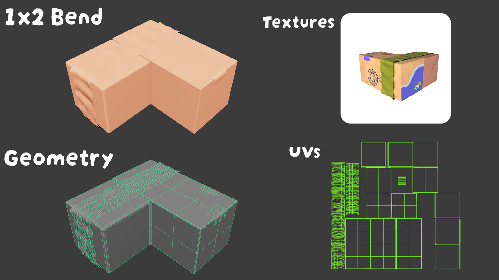
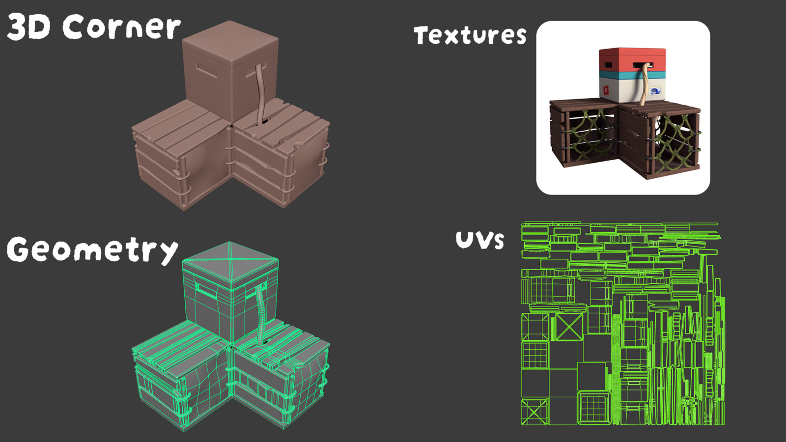

Concept reference
Concept art by Athena Wang.
Selected modeling and production work. This section supports my multidisciplinary profile without replacing the UX-focused case studies.
I translated Athena Wang’s package concepts into game-ready 3D models and UV layouts. Leo Daynard created the final textures.

Concept art by Athena Wang.

My contribution: 3D modeling + UVs. Textures by Leo Daynard.
The props were built for direct use in the playable Lobster Loader environment.

One of the more structurally complex package shapes.
Model and UV breakdown for a cross-shaped package.
A cleaner hard-surface example from the production set.
A separate modeling, material, lighting and composition study showing a more realistic rendering direction.